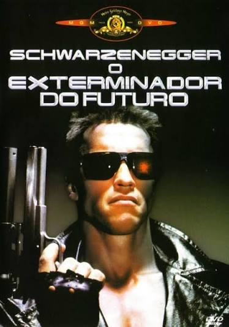

⚡Ficção cientifica anos 80 a 90 ⚡ |
nome: O Exterminador do Futuro Data de lançamento: 1984categorias: Ação / ficção científicaclassificação: 16Sinopse:Em 2029, máquinas dominam o mundo e enviam um exterminador robótico ao passado para matar Sarah Connor, uma mulher cujo filho será fundamental na luta contra as máquinas. Para protegê-la, um soldado também é enviado ao passado. minha avaliação:Filme Épico. Um dos melhores de todos os tempos. Esse filme sempre ficará marcado para muitas pessoas. O filme tem muita ação, uma história excelente e bem desenvolvida. Vale muito a pena assistir. |